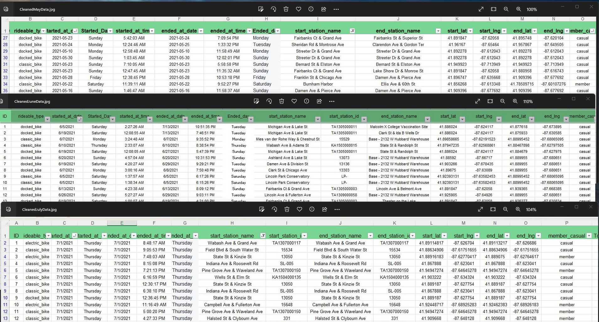

Intro
I am Bernard Edwards, a seasoned professional with extensive experience in both banking and healthcare sectors. Over the past decade, I've mastered financial analysis, risk assessment, and customer relationship management in banking, while also excelling as a Benefits and Eligibility Specialist in healthcare.
My career is anchored in my fervent passion for data analysis. Continuously enhancing my skills, I leverage analytical prowess, programming proficiency, and collaboration to tackle challenges and drive business growth.
Across various roles in management, outreach, process development, and strategy, I've gained a profound understanding of advisory roles, data analysis methodologies, and decision-making processes. I'm dedicated to enhancing operational efficiency and accuracy to contribute significantly to organizational success.
As a highly motivated professional, I excel in executing ambitious ideas, relying on data-driven insights and continuous learning to remain adaptable and resilient. My commitment to delivering high-quality results is unwavering.
With over 15 years of expertise as a Data Analyst in financial and healthcare sectors, I'm proficient in Salesforce, Excel, Tableau, and SQL. Complemented by the Google Data Analytics Certificate, I stay updated on industry trends and expand my skill set. Renowned for delivering impactful results, such as saving $3 million in healthcare costs for Cape Cod and optimizing surgery and drug expenses through data-driven interventions, I seek a challenging data analytics role to further leverage my problem-solving abilities, foster collaboration, and uphold ethical data practices. Proficient in SQL, with Python skills on the horizon, I am eager to discuss how I can contribute to your organization's goals. Let's connect and embark on a journey of innovation and success. awesome work.
BikeShare
BikeShare Project
Skills
Data Analysis Skills:
Excel,
SQL,
R programming,
Tableau,
Power BI
Expected Skills:
Python (in progress)
Relevant Skills & Expertise:
Data Analysis Techniques Skills: Data Collection, Data Cleaning, Data Structures, Data Analysis, Data Visualization, Data Ethics, Regression Analysis, Classification Models, Machine Learning, Statistical Analysis, Predictive Modeling, Data Mining,Data ethics, Data standards, Data documentation, Machine learning, Predictive modeling, Clinical data analysis, SAS programming language, EHR data, Relational databases, Data Mining, Data scrubbing, Sql Writing, Interactive Dashboards, Leading Analytical Tools
Data Visualization: Data Storytelling, Interactive Dashboards, Visualization
Software Platforms: Microsoft 365 Suite, Slack, Zoom, Salesforce, (CRM) Customer Relationship Management, Salesforce, Microsoft
Strengths: Problem-solving, Attention to Detail, Analytical and Critical Thinking, Communication & Teamwork, and Collaboration
Industry-specific Skills: Healthcare Analytics, Financial Analytics, CRM (Customer Relationship Management) Analytics, Enrollment Analysis, Benefits Analysis, Eligibility Analysis, SAS Programming Language, Multidisciplinary Data Analyst, Clinical Data Analysis, Statistical Modeling, Multidisciplinary Data Analyst, Relational databases, Excel, Powerpoint
Soft Skills: Problem-solving, Attention to Detail, Analytical Thinking and Problem-solving, Critical Thinking, Communication Skills, Teamwork, Collaboration, Continuous Learning, Adaptability, Creativity, Time Management, Ability to Work Independently and in a Team Environment, Research, Oral communication
Projects
Please review the process in creating the project on BikeShare:
During my recent capstone project, I conducted an in-depth analysis of bikeshare data, focusing on the behaviors of casual riders and annual members at Cyclistic Bikeshare. This involved meticulously examining usage patterns to extract valuable insights.
Through this analysis, I uncovered how each data point reflects user engagement and satisfaction. I was able to identify seasonal variations in ridership and preferences for different bike types, providing actionable information for decision-making.
This project not only honed my analytical skills but also strengthened my problem-solving, critical thinking, and communication abilities. I became proficient in deciphering complex datasets and translating them into practical recommendations.
To achieve this, I utilized various data tools. I cleaned and organized the data using Excel and performed queries using SQL. The results of these queries and the cleaned datasets are available for reference. Furthermore, I manipulated the data in SQL to generate insights for visualization in Tableau.
I'm excited to share the outcomes of this project and explore how my expertise in data analysis can benefit your team, regardless of your level of experience in the field.
Excel Cleaned Data

SQL SERVER Management Studio Queries

Explore Tableau Interactive projects on LinkedIn with projects insight:
All Tableau Projects
Explore Tableau projects on Tableau:
All Tableau Projects
Contact
Elements